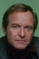

Country:United States, 390 minutes
Spoken languages:English
Genres:Animation, Comedy
Director(s):
Writer(s):
Video Codec:Unknown
Number: 2578


Certification:
Storyline:
Toxic Crusaders is an animated series based on The Toxic Avenger films. It features Toxie, the lead character of the films leading a trio of misfit superheroes who combat pollution. This followed a trend of environmentally considerate cartoons of the time, including Captain Planet and the Planeteers, Swamp Thing, and Teenage Mutant Ninja Turtles. As this incarnation was aimed at children, Toxic Crusaders is considerably tamer than the edgy films it was based on. Thirteen episodes were produced and aired, with at least a few episodes airing as a "trial run" in Summer 1990 followed by the official debut on January 21, 1991.
Cast: 

Medium: Original DVD,
Comments: Part of: The Complete Toxic Avenger
Loaned: No
Aspect ratio: Unknown